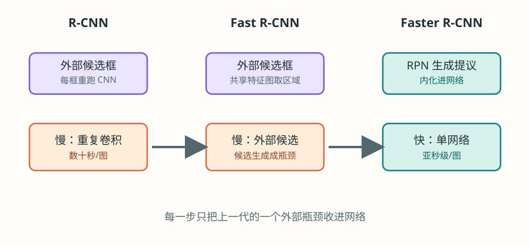
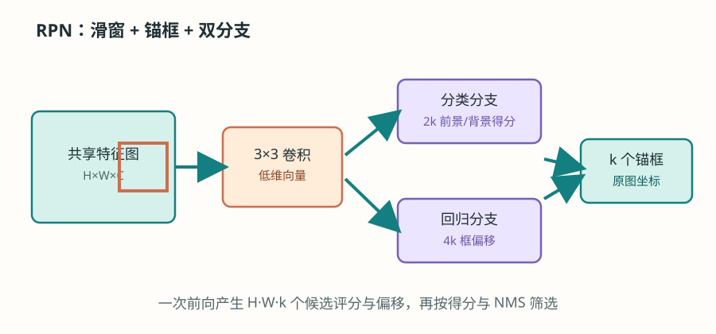
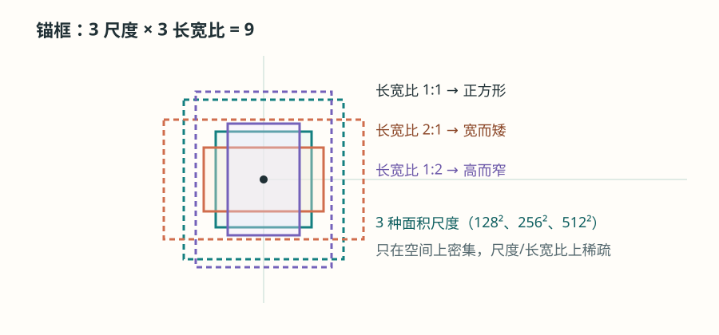
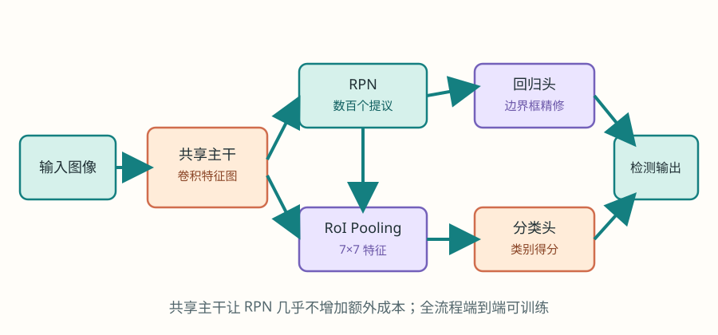

CHAPTER 17 · FASTER R-CNN
Faster R-CNN：把候选生成交给网络
Fast R-CNN 消除了重复卷积，瓶颈却转移到了外部的候选区域生成。Faster R-CNN 用一个与主干共享特征的小网络（RPN）在特征图上直接提议区域，使检测第一次成为单网络、近实时的流程。
瓶颈从特征提取转移到候选生成
R-CNN 的致命瓶颈是重复卷积：两千个高度重叠的候选各自跑一遍完整 CNN。Fast R-CNN（Girshick，2015）用两个改动消除了它：只用一次全图卷积得到共享特征图，再用 RoI Pooling 从共享特征图上为每个候选截取固定尺寸的特征；同时用一个多任务损失在同一网络里联合优化分类与框回归，取代了 R-CNN 分头训练 SVM 与回归器的多阶段流程。
效果是推理从数十秒降到亚秒级。但此时第一阶段仍是外部的 Selective Search：它不跑在 GPU 上，也不能与主干共享计算，很快成为新的时间瓶颈。优化方向随之从“特征提取”转向“候选生成”。

RPN：在特征图上滑动地提议区域
Faster R-CNN 的核心想法是：既然主干已经为全图算出了卷积特征，为什么不直接在同一个特征图上生成候选区域？区域提议网络（Region Proposal Network, RPN）就是这样一个轻量小网络：它跟着 n×n（论文用 3×3）的滑动窗口在特征图上逐位置卷积，在每个位置投影为一个低维向量（VGG 主干为 512 维，ZF 主干为 256 维），再接两个 1×1 卷积分支：
- 分类分支：对每个位置的 k 个锚框输出前景/背景得分，共
2k个值； - 回归分支：对每个锚框输出四个偏移，共
4k个值。

2k 的 objectness 得分与 4k 的框偏移。滑窗的卷积与主干共享，所以 RPN 的额外开销很小。因为 RPN 与后续检测头共享同一个卷积主干，它在已有特征图上的额外计算量很小——这正是“把候选生成内化进网络”的代价之所以可接受的原因。特征图上一个位置对应原图上一块感受野，这也是锚框能定义在“某尺度、某长宽比”上的几何基础。
从特征图尺寸到候选数量。若特征图为 H×W、每位置 k 个锚框，则一次前向共产生 H·W·k 个候选评分与偏移（例如 H=60, W=40, k=9 时为 21600 个），再按得分与 NMS 筛选出数百个提议送入第二阶段。这个数量级是设计选择，不是固定常数。
锚框：用少量参考框覆盖尺度与长宽比
RPN 不直接回归绝对坐标，而是为每个位置预定义 k 个不同尺度与长宽比的参考框（anchor），网络只预测每个锚框相对真值的偏移，这与第 16 章的框参数化一脉相承。默认配置用 3 种面积尺度（128²、256²、512²）与 3 种长宽比（1:1、1:2、2:1）组合成 k=9 个锚框。

| 锚框配置 | 尺度 | 长宽比 | 每位置数量 k |
|---|---|---|---|
| 论文默认 | 128², 256², 512² | 1:1, 1:2, 2:1 | 9 |
| 偏向小物体 | 更小的尺度集合 | 包含更极端的长宽比 | 依实现而定 |
| 偏向密集场景 | 更多尺度 | 更多长宽比 | 依实现而定 |
import math
def make_anchors(cx, cy, sizes=(128, 256, 512), ratios=(0.5, 1.0, 2.0)):
# 为单个中心点生成 k = len(sizes) * len(ratios) 个锚框 (x1,y1,x2,y2)
anchors = []
for s in sizes:
area = s * s
for r in ratios:
w = round(math.sqrt(area / r))
h = round(math.sqrt(area * r))
anchors.append((cx - w/2, cy - h/2, cx + w/2, cy + h/2))
return anchors
a = make_anchors(0, 0)
assert len(a) == 9
# 尺度 256 的 1:1 框，半边长应为 256/2=128（索引：先遍历 sizes 再遍历 ratios）
assert a[4] == (-128.0, -128.0, 128.0, 128.0)
# 同为尺度 128：r=2.0 的框应高而窄，r=0.5 的框应宽而矮
assert (a[2][3]-a[2][1]) > (a[0][3]-a[0][1])
assert (a[0][2]-a[0][0]) > (a[2][2]-a[2][0])
print("anchors:", len(a), "first:", a[0])正负样本定义与多任务损失
训练 RPN 前，先给每个锚框打标签（论文阈值）：
- 正样本：与某个真值框 IoU 最大的锚框（保证每个真值至少有一个正样本），或与任一真值框 IoU 超过 0.7 的锚框；
- 负样本：与所有真值框 IoU 低于 0.3 的锚框；
- 忽略：IoU 在 0.3~0.7 之间的锚框不参与训练。
“留出灰色地带”是因为这些锚框既含部分前景又不够精确，强行归为任一类都会给训练引入噪声。给定锚框预测概率 p、真值标签 p*∈{0,1}、预测偏移 t 与目标偏移 t*，RPN 的损失是分类项与回归项的加权和：
分类用二分类交叉熵，回归用 Smooth L1；p*_i 乘在回归项前，使回归损失只对正样本生效；λ 平衡两项量级。
交替还是联合。论文原文采用交替训练：先训 RPN，用其提议训 Fast R-CNN，再用 Fast R-CNN 权重重新初始化 RPN 并固定共享层微调。后续实现发现可以联合训练（近似联合优化）一次完成、效果相当且流程更简单；现代框架（如 Detectron2、MMDetection）默认采用联合训练。这里区分的是论文原做法与现代工程实现，不要把两者当成同一套训练流程。
共享主干上的端到端架构
把上述部件拼起来，Faster R-CNN 的完整结构就很清楚：主干卷积一次、RPN 与检测头共享它，提议区域再投回共享特征图做检测。

| 组件 | 功能 | 输出 |
|---|---|---|
| 共享卷积主干 | 提取全图特征 | 卷积特征图 |
| RPN | 在特征图上滑窗、预测锚框前景得分与偏移 | 数百个提议（经 NMS 筛选） |
| RoI Pooling | 从共享特征图截取每个提议并统一尺寸 | 固定尺寸特征（如 7×7） |
| 分类与回归头 | 精细分类 + 边界框精修 | 最终检测结果 |
由于所有组件都在同一网络中，Faster R-CNN 能用标准反向传播端到端优化。从输入到输出不再有外部模块，是它区别于 R-CNN/Fast R-CNN 的关键。
RoI Pooling 的量化误差与 RoIAlign
RoI Pooling 把提议坐标映射到特征图时会把边界取整，再对分块做最大池化，带来最多约一个特征像素的对齐误差。物体大时这点误差无关紧要；物体小时，它相当于在坐标上直接错位，会让定位与掩码质量明显下降。
Mask R-CNN（2017）提出的 RoIAlign 去掉了取整：它用双线性插值在每个采样点直接从特征图取值，保留连续坐标。论文报告这一改动显著改善了小物体上的精度；具体提升幅度与应用场景相关，需以原论文的消融表为准，本页不固化数字。
工程上的教训不是“哪个池化更快”，而是：检测系统里对小物体影响最大的往往不是主干容量，而是坐标映射的连续性与对齐。同一个提议若因取整偏移一个像素，高 IoU 阈值下的匹配结果可能完全不同。
历史地位
Faster R-CNN（NIPS 2015）常被视为首个真正端到端可训练的检测器：候选生成、特征提取、分类与回归全部在同一网络内，用统一的损失反向传播。它的三个影响一直延续到今天：
- RPN 范式：把“提区域”从外部模块变成网络内部的可学习部件，且几乎不额外增加共享主干的成本。
- 锚框成为标配：SSD、RetinaNet 与多代 YOLO 都沿用了预定义参考框的思想；后来的 anchor-free 方法（如 FCOS）则正是为了绕开锚框超参而与它相对。
- 可扩展框架：主干可替换（VGG、ResNet、ResNeXt），特征金字塔（FPN）等改进可直接插在它上验证，使它长期作为两阶段检测的事实基准。
理解 Faster R-CNN 的重点不在于记住超参，而在于看清“逐步内化”的方法论：每一代只把上一代的一个外部瓶颈收进网络，直到整条链路都可以端到端学习。
检查理解：为什么 RPN 的回归损失要乘上 p*_i？
因为只有正样本（前景锚框）才需要精修位置，背景锚框没有对应真值框；若让背景锚框也参与回归，会给损失注入无法定义的目标。分类损失则对所有采样锚框生效。
原始资料与评估口径
本页的锚框配置、正负样本阈值与损失形式依据 Faster R-CNN 原文；交替/联合训练的区分依据原论文与后续官方实现。推理耗时只用于描述数量级。